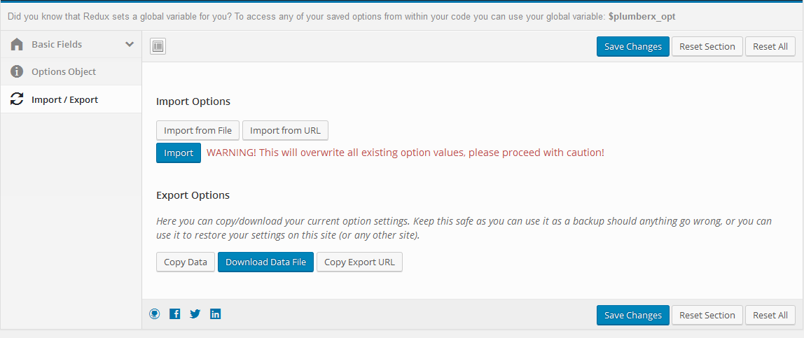
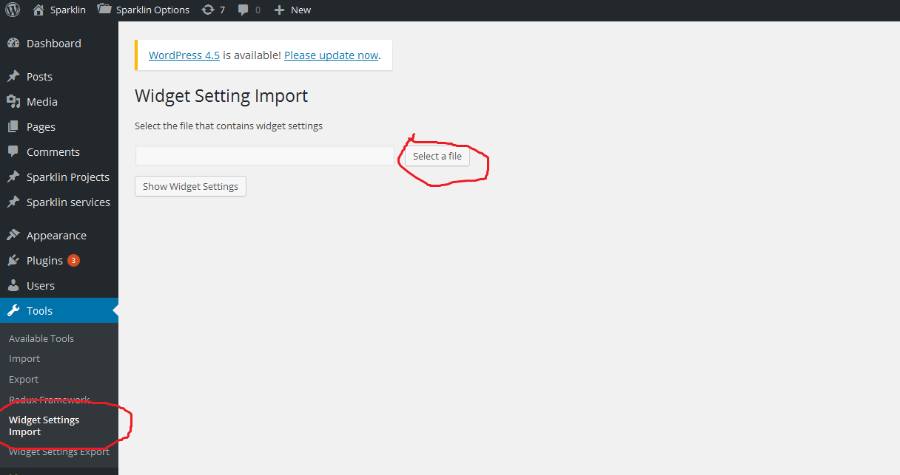

Import Dummy Data
Some dummy data has been included to help you get started, its not identical to the demo site but hopefully it'll give you a general idea of how things work. If you run into any problems replicating something you've seen on the demo site feel free to ask our support team and We'll be happy to help!
- Install the WordPress Importer Plugin
- Now go to Tools > Import > WordPress and select the wander-all-content.xml file from the Import Data folder
- Theme Options
To import theme option data, open wander_redux_options.json from Dummy_Data folder and import it.

- Then go to Tools > Widget Settings Import and select the wander-widgets.json file from the Import Data folder
